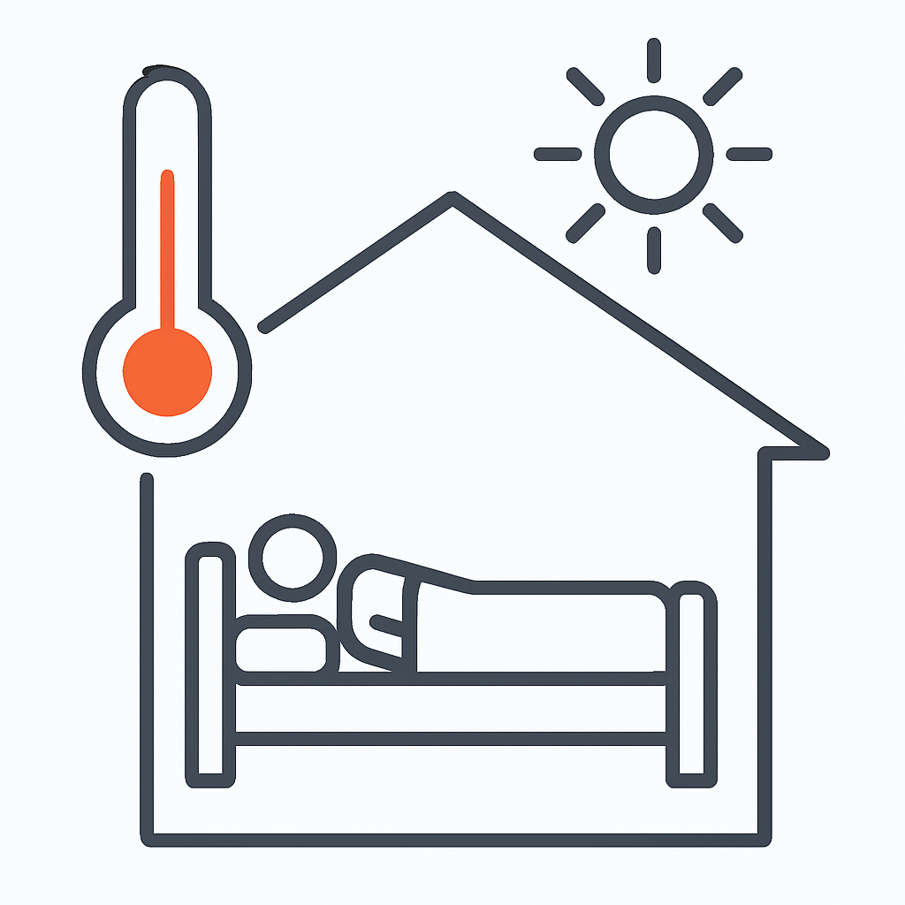

Overview
Guidance on overheating prevention in residential buildings, including passive design, shading, ventilation, and thermal comfort standards.
Clauses
Clause 1: Thermal comfort requirements
Residential buildings must be assessed to ensure internal temperatures do not exceed acceptable limits during warm periods.
Typical evidence: dynamic thermal modelling, TM59 or equivalent assessment, internal temperature calculations.
Clause 2: Shading and solar control
Buildings must limit unwanted solar gains through appropriate shading, glazing specification, and orientation.
Typical evidence: shading strategy drawings, glazing specifications, solar gain calculations.
Clause 3: Passing ventilation strategies
Adequate ventilation must be provided to remove excess heat, using passive or mechanical strategies where appropriate.
Typical evidence: ventilation layouts, airflow calculations, window opening areas, system specifications.
Clause 4: Monitoring and mitigation
Where overheating risk remains, additional mitigation measures must be implemented to maintain safe internal temperatures.
Typical evidence: revised thermal models, mitigation reports, design change records.
Energy Checklist
- Check shading devices
- Inspect natural ventilation paths
- Verify thermal comfort simulation
- Plan mitigation strategies for overheating
Part O — Overheating Compliance Flow
A simplified decision path to help identify overheating risks and mitigation strategies. This is a visual aid, not legal advice.
Define dwelling type
Urban / suburban, solar exposure
Shading, glazing limits
Cross / purge ventilation
Thermal comfort assessment
Compliance evidence & mitigation